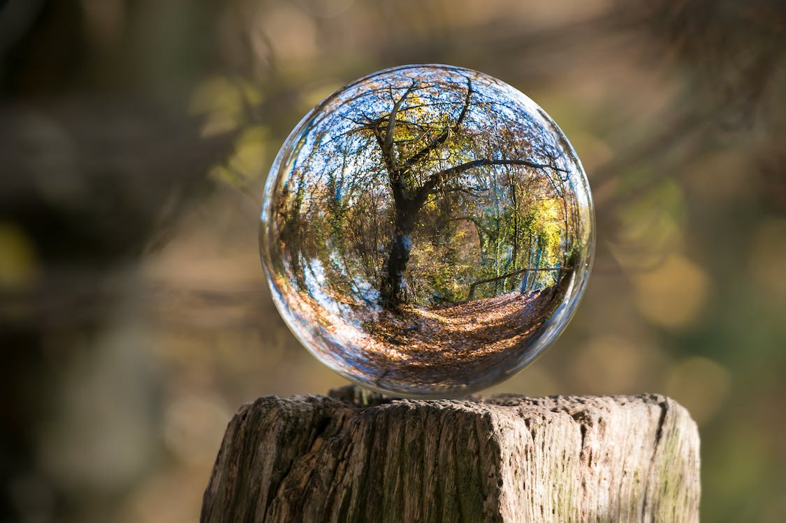

¿Quienes somos?

La Asociación Artealidario usa la creación artística y cultural como herramientas para colaborar a conseguir un mundo mejor, más humanitario, más equilibrado, más justo, y mejor conservado y sostenible. Nuestro principal objetivo es recaudar fondos destinados a ONGs o proyectos que trabajen en los temas mencionados anteriormente a través de la adquisición de productos artístico-culturales procedentes de donaciones totalmente altruistas de artistas de diferente índole. Puede adquirir estos productos artístico-culturales a cambio de donativos para las ONGs mencionadas visitando nuestra “TIENDA ONLINE“.
Asociación Artealidario:
Inscrita en el Registro Nacional de Asociaciones: Grupo: 1º / Sección: 1ª / Número Nacional: 1002001.
Inscrita en el Registro de Agentes de la Cooperación Internacional para el Desarrollo en Andalucía.
Fines:
- Contribuir a mejorar el bienestar de las personas desfavorecidas, marginadas, víctimas de catástrofes o de malos tratos.
- Defender los derechos humanos y la solidaridad como herramientas para una mejor y más sana convivencia.
- Contribuir a la conservación de la biodiversidad y los valores naturales del planeta.
- Fomentar actividades que repercutan directamente en la creación artística y cultural como vehículos para la mejora de la realización personal, y la solidaridad, el bienestar y la convivencia colectivas.
Actividades:
- Creación de un fondo con obras artístico-culturales procedentes de donaciones totales o parciales, que se pondrán a la venta al público.
- Organización de forma autónoma o en conjunto con diferentes personas, entidades y organizaciones, de actividades solidarias (exposiciones, actuaciones o eventos artístico-culturales y deportivo-recreativas) destinadas a la recaudación de fondos para los fines de la Asociación.
- Realización de campañas de sensibilización relacionadas con los fines de la Asociación acompañando a los eventos y actividades desarrolladas para la recaudación de fondos.
- Colaboración con otras actividades solidarias organizadas por otras organizaciones, instituciones o entes de diversa naturaleza.
- Organización de concursos en diversos ámbitos del arte y la cultura.
Principios:
- La Asociación ArteSOSlidario no tiene afiliación política y es aconfesional, pero admite asociados, socios y colaboradores de cualquier ideología política o religiosas siempre y cuando compartan y respeten las ideas y valores expresados en nuestros estatutos.
- La Asociación no aceptará bienes procedentes de individuos, empresas o instituciones que no respeten los derechos humanos y que no compartan los principios de conservación de los valores naturales del planeta, o los criterios de desarrollo sostenible como vehículos fundamentales para una convivencia global mas justa, equitativa, saludable y duradera.
- El funcionamiento de la Asociación estará regido por criterios éticos respetuosos con los derechos humanos y criterios de sostenibilidad económica y ambiental en el uso de materiales en todas sus actividades.
- Igualmente, las personas, grupos de personas y organizaciones sin ánimo de lucro que puedan ser perceptores de los fondos recaudados por la Asociación deberán compartir los mismos principios de respeto de los derechos humanos, conservación del medio ambiente, y sostenibilidad.
- Las actividades solidarias a desarrollar por la Asociación tendrán principalmente su ámbito en el estado español, mientras que los fondos recaudados con tales actividades se destinarán principalmente a terceras partes que desarrollen actuaciones en países del tercer mundo.